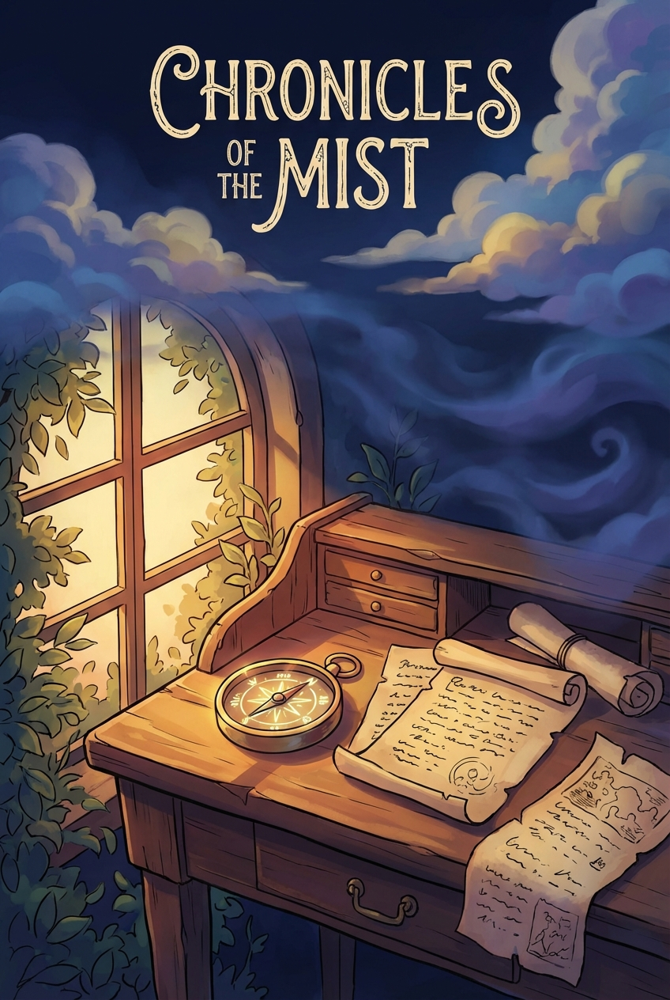
An Illustrated Summary
# Chapter I: There Is No One Left
Mary Lennox was not a child anyone would have chosen to pity, nor one whose face invited tenderness. When she was sent away to live with her uncle at Misselthwaite Manor, all who saw her agreed she was the most disagreeable-looking creature imaginable—and they were quite right. Her face was thin and sallow, her body slight and sickly, her expression perpetually sour. She had been born in India, where the climate and illness had turned her complexion the color of old parchment, and where her parents had seen fit to ignore her almost entirely from the moment she drew breath.
Her father, occupied with government duties and his own poor health, had no time for her. Her mother, a renowned beauty who lived for parties and admiration, had no desire for a child at all. The moment Mary arrived, squalling and unwanted, she was handed over to an Ayah with strict instructions to keep the child invisible. And so Mary grew—not in affection or warmth, but in tyranny. The servants gave her everything she demanded, if only to keep her quiet, until by age six she had become as spoiled and selfish a creature as ever drew breath. Governesses came and fled in quick succession, unable to bear her temper. Only her own stubborn curiosity saved her from complete ignorance of letters.
Then came the morning everything changed—a morning thick with Indian heat and something far more sinister. Mary woke cross, as she always did, but crosser still when a strange servant stood where her Ayah should have been. The woman stammered and trembled but would not explain. The household moved in whispers and shadows, servants missing or hurrying about with ash-gray faces. No one would answer Mary's demands, and so she was left alone, forgotten even in her fury.
She wandered into the garden, stabbing scarlet hibiscus blooms into the dirt and muttering insults for her absent Ayah, when she heard her mother emerge onto the veranda with a young English officer. The Mem Sahib—beautiful, elegant, wrapped in floating lace—looked nothing like herself that morning. Her laughing eyes were wide with terror.
"Is it so very bad?" Mary heard her plead.
"Awfully," the young man answered, his voice trembling.
And then came the wailing—a terrible sound rising from the servants' quarters, spreading like wildfire. The cholera had come, swift and merciless. The Ayah had already died. By the next day, three more servants were gone, and others had fled in blind panic. Death moved through the bungalows like wind through dry grass.
Mary, abandoned and forgotten, hid in the nursery. She cried, she slept, she crept once to the dining room and found it empty—chairs pushed back, a meal half-eaten, as though everyone had simply vanished. She drank wine she did not know was strong and fell into a heavy, dreamless sleep.
When she finally woke, the silence was absolute. No voices, no footsteps, no weeping. Only stillness, and a small snake gliding across the matting, watching her with jeweled eyes before slipping beneath the door.
It was English officers who finally found her—standing rigid in the middle of the nursery, thin and cross and utterly alone. One man nearly stumbled backward at the sight of her, unable to believe a child had survived in such a place.
"There is nobody left to come," the young officer named Barney told her, his eyes bright with unshed tears.
And so Mary learned, in that strange and sudden way, that her mother and father were dead, carried away in the night—that the servants had fled without a single thought for the Missie Sahib no one had ever loved. She stood alone in the empty bungalow, with nothing but silence and a little rustling snake for company, on the threshold of a life she could not yet imagine.
# Mistress Mary Quite Contrary
Mary Lennox had always admired her mother from afar, thinking her quite pretty in the way one might admire a painting glimpsed through a doorway. But knowing so little of the woman who had given her life, she could hardly be expected to mourn her passing with any great depth of feeling. Indeed, she did not miss her at all. Mary was a thoroughly self-absorbed child who had always given her entire thought to herself, and she saw no reason to change this habit now that she found herself orphaned. Had she been older, the terror of being left alone in the world might have seized her, but she was very young and had always been looked after. She simply assumed she always would be. Her only concern was whether her new guardians would be nice people—polite people who would give her her own way, as her Ayah and the native servants had always done.
The English clergyman's house where she was first deposited would not do at all. The man was poor, his five children wore shabby clothes and quarreled endlessly, snatching toys from one another with grubby hands. Mary hated their untidy bungalow and made herself so thoroughly disagreeable that within days no one would play with her. It was then that Basil, an impudent boy with blue eyes and an upturned nose, bestowed upon her a nickname that made her furious. He found her playing alone beneath a tree, making little heaps of earth for a pretend garden, and when she snapped at him to go away, he danced around her singing that old nursery rhyme: *Mistress Mary, quite contrary, how does your garden grow?* The other children took up the chant, and the crosser Mary became, the more they sang it.
It was Basil who told her she was being sent to England, to live with an uncle called Mr. Archibald Craven—a hunchback, he said, who lived in a great desolate house where no one ever visited because he was so horrid and cross. Mary declared she did not believe him and stuck her fingers in her ears, but she thought about it a great deal afterward.
The long voyage to England passed uneventfully, and in London she was handed over to Mrs. Medlock, her uncle's housekeeper—a stout woman with red cheeks, sharp black eyes, and a purple dress trimmed with jet. Mary did not like her, though this was hardly remarkable since Mary seldom liked anyone. Mrs. Medlock, for her part, made no secret of finding the child plain and unpromising.
On the train to Yorkshire, Mrs. Medlock attempted conversation, describing Misselthwaite Manor—six hundred years old, nearly a hundred rooms mostly shut up and locked, standing on the edge of something called a moor. Mr. Craven, she explained, had a crooked back that had made him sour, though he had softened briefly when he married a sweet, pretty wife. But the wife had died, and now he shut himself away in the West Wing, caring for nobody, seeing nobody.
Mary listened despite herself, picturing this gloomy house with its locked doors and lonely master. The rain began to pour in gray slanting sheets against the carriage windows, and it seemed fitting somehow—this dreary weather for this dreary journey to this dreary place. She felt a flicker of pity for Mr. Craven, remembering a French fairy story about a hunchback, but it faded quickly when Mrs. Medlock warned her not to expect attention or company.
She turned her face to the streaming glass, watching the endless gray storm, and somewhere between one thought and the next, she fell asleep—a small, sour, contrary child hurtling through the rain toward a house full of secrets she could not yet imagine.
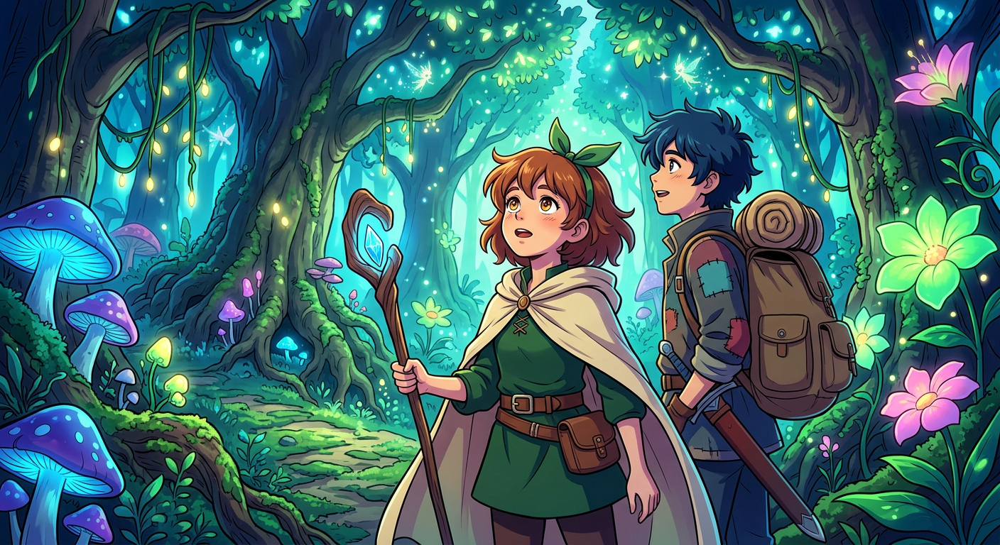
# Across the Moor
Mary woke to find Mrs. Medlock had procured a lunchbasket from one of the stations—chicken, cold beef, bread and butter, and hot tea—while the rain continued its relentless streaming against the carriage windows. The world outside seemed draped in wet and glistening waterproofs, and the guard had lit the carriage lamps against the growing darkness. Mrs. Medlock, considerably cheered by her meal, ate heartily before falling asleep herself, her fine bonnet slipping comically to one side while Mary watched. Soon enough, the steady splashing of rain lulled the little girl back into sleep as well.
When Mary next opened her eyes, night had fallen completely, and Mrs. Medlock was shaking her awake at Thwaite Station. A long drive still lay ahead of them. Mary stood and made no move to help gather the parcels—in India, native servants had always attended to such things, and it seemed perfectly proper that others should wait on her. The small station appeared deserted save for themselves, and a rough but good-natured station-master greeted Mrs. Medlock in broad Yorkshire speech that Mary would later come to recognize. A smart brougham waited outside, attended by a footman whose waterproof coat dripped with rain like everything else in that sodden landscape.
Once settled in the cushioned carriage corner, Mary found herself too curious for sleep. She pressed her face to the window, watching the darkness unfold as they drove toward that queer house Mrs. Medlock had described—a hundred rooms nearly all shut up, standing on the edge of something called a moor. When Mary asked what a moor was, Mrs. Medlock told her simply to watch and wait. They passed through a tiny village of whitewashed cottages, past a church and vicarage, and then onto the highroad lined with hedges and trees. Gradually, everything fell away—the hedges, the trees, until only dense darkness surrounded them on all sides.
The carriage jolted as the horses climbed, and Mrs. Medlock announced they were on Missel Moor at last. A strange wind rose up, making a wild, rushing sound that Mary mistook for the sea. But it was only the wind through the heather and gorse, Mrs. Medlock explained—miles and miles of wild land where nothing lived but ponies and sheep. The moor stretched before them like a vast black ocean, and Mary, pressing her thin lips together, thought to herself that she did not like it at all.
At last, a light appeared—the lodge window—and Mrs. Medlock sighed with relief. Yet two more miles of dark avenue remained, the trees meeting overhead like a long vault, before they emerged to find Misselthwaite Manor sprawling low and long around a stone courtyard. Only one window showed light, a dull glow in an upstairs corner. The massive oak door, studded with iron nails, opened into an enormous hall so dimly lit that Mary shrank from the portraits and suits of armor watching from the shadows. She stood on the cold stone floor, a small, odd, black-clad figure, feeling as lost and contrary as she looked.
A thin old man named Mr. Pitcher delivered the household's instructions: the master did not wish to see her and was leaving for London in the morning. Mary was to be kept out of sight, out of the way. Mrs. Medlock led her up staircases and through a maze of corridors until they reached a room with a fire burning and supper waiting on a table.
"This is where you'll live," Mrs. Medlock announced without ceremony, "and you must keep to these rooms. Don't forget it."
And so Mistress Mary arrived at Misselthwaite Manor, feeling perhaps more contrary than she had ever felt in all her young life—though she could not yet imagine what strange secrets those hundred closed rooms might hold, or what the wild moor might reveal when daylight finally came.
# Martha
Mary woke to the unfamiliar sounds of a young housemaid kneeling on the hearth-rug, raking cinders from the grate with cheerful noisiness. The room itself seemed a strange and gloomy place, its walls hung with tapestry showing a forest scene—fantastically dressed people beneath trees, hunters and horses and ladies, and in the distance the turrets of a castle. Through the deep window stretched an endless, dull, purplish expanse that looked rather like a sea without trees or any softness to it.
"That's th' moor," said Martha, the housemaid, grinning good-naturedly when Mary asked. She spoke of it with such love—the growing things that smelled sweet, the gorse and broom and heather in flower, the honey-scented air and the high sky filled with the humming of bees and the singing of skylarks—that Mary could only listen with grave puzzlement. This servant was nothing like the obsequious natives she had known in India, who made salaams and called her "protector of the poor" and would never presume to speak as equals.
Martha was round and rosy and sturdy in her way, and when Mary told her haughtily that she was a strange servant, the girl only laughed without offense. She explained that Misselthwaite was a funny sort of house—neither Master nor Mistress about except for the servants, and Mr. Craven nearly always away and not wishing to be troubled about anything when he was there. Mrs. Medlock had given Martha the position out of kindness, something that could never have happened in a proper grand house.
When Martha discovered that Mary could not dress herself—had never done so in her life, having always been attended by her Ayah—she did not hide her astonishment. "It's time tha' should learn," she said plainly, and though Mary was disdainful and declared that things were different in India, Martha remained uncrushed. Indeed, when Martha admitted she had expected Mary to be black, having heard she came from India, Mary flew into a rage and called her a daughter of a pig. But the confrontation ended not in triumph for Mistress Mary but in passionate sobbing, for she felt suddenly horribly lonely and far from everything she understood.
Martha's good-natured Yorkshire manner had a comforting effect, and gradually Mary calmed. She learned that Martha came from a family of twelve, her father earning only sixteen shillings a week, and that her brother Dickon—twelve years old—had a pony of his own that he'd befriended on the moor, and that animals took to him wonderfully. Something stirred in Mary at the mention of Dickon, though she hardly knew why.
After refusing most of her breakfast—having never known what it was to be hungry—Mary was sent outside to play alone, as children without sisters and brothers must do. It was really the thought of Dickon that made her go, though she wasn't aware of it. Martha directed her toward the gardens and mentioned, with some hesitation, that one garden had been locked for ten years—Mrs. Craven's garden, shut up when she died suddenly, the key buried by Mr. Craven himself.
Mary wandered through the great wintry gardens, through kitchen-gardens and orchards with walls all around, searching for a door that might lead to the secret place. She found none, but standing in the orchard she saw a bird with a bright red breast perched on a tree whose top rose above an ivy-covered wall—and he burst into song as if calling to her.
The old gardener, Ben Weatherstaff, with his surly face and blunt Yorkshire manner, told her the bird was a robin redbreast and that they had been friends since the robin was a fledgling. The robin had come from the nest in *that other garden* and had grown lonely when his brood scattered. When Mary admitted that she too was lonely—a truth she had not known until the robin's bright eye seemed to find it out—Ben Weatherstaff regarded her with something approaching understanding. "Tha' an' me are a good bit alike," he said plainly. "We're neither of us good lookin' an' we're both of us as sour as we look."
The robin made friends with Mary that day, singing to her in a way that made Ben Weatherstaff marvel at how human she sounded when she spoke softly to it—"almost like Dickon talks to his wild things." But when Mary watched the robin fly over the wall into the garden with no door, and asked about the rose-trees that grew there, Ben Weatherstaff turned surly again and would say no more, only warning her not to be meddlesome.
He walked off without a word of farewell, leaving Mary standing alone in the winter garden, her curiosity about the locked place burning brighter than ever—and somewhere beyond the wall, the robin knew all its secrets.
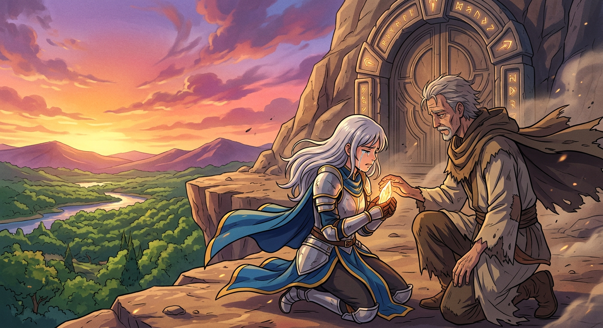
# The Cry in the Corridor
In those first days at Misselthwaite Manor, Mary Lennox found each morning arriving much like the one before it—Martha kneeling at the hearth to build up the fire, breakfast taken in the cheerless nursery, and the vast purple moor stretching endlessly beyond her window, climbing toward the sky as though it might swallow the whole world. She did not know, this contrary little girl, that going out of doors was the very best thing she could have done for herself. She ran along the paths and down the avenue merely to keep warm, fighting against the great wind that swept down from the moor and roared at her face like some invisible giant determined to hold her back. Yet those rough gusts of heather-scented air were filling her thin lungs with something wholesome, whipping color into her sallow cheeks and brightness into her dull eyes, though she remained entirely unaware of the transformation taking root within her.
After several days spent wandering the grounds, Mary woke one morning with a new sensation—hunger. She took up her spoon and ate her porridge without a single disdainful glance, much to Martha's satisfaction. The Yorkshire girl declared it was the moor air giving her stomach for her food, and told Mary to keep playing outdoors if she wished to put flesh on her bones. But Mary insisted she did not play, for she had nothing to play with. Martha found this wonderfully strange, explaining that her own brothers and sisters played with nothing but sticks and stones, running about and shouting and simply looking at things. Mary did not shout, but she did look—for there was nothing else to do.
She wandered the gardens and paths, sometimes seeking out Ben Weatherstaff, though the old gardener remained too busy or too surly to acknowledge her. One place drew her more often than any other: the long walk outside the walled gardens where ivy grew thick against the stones. At one stretch of wall, the dark green leaves hung more bushy and neglected than elsewhere, and Mary paused to wonder why. It was there the robin found her again—Ben Weatherstaff's robin—perched upon the wall with his scarlet breast gleaming, tilting his small head as though inviting conversation.
Mary spoke to him as naturally as if he were a friend, and the robin answered with chirps and twitters that seemed to say all manner of pleasant things about the wind and sun. For the first time, poor thin sallow Mary laughed and ran after him along the path, looking almost pretty in that moment of delight. When the robin flew to a treetop and sang, Mary realized with sudden certainty that the tree stood inside the mysterious locked garden—the garden without a door. She searched every inch of the walls but found no entrance, and the puzzle gave her something to think about at last, something that made her almost glad she had come to Misselthwaite Manor.
That evening, warm and drowsy from her day outdoors, Mary asked Martha why Mr. Craven hated the garden so. Martha, settling comfortably on the hearthrug while the wind wuthered round the house, shared what she knew—how Mrs. Craven had made the garden her own when first married, how the two of them would shut themselves inside for hours among the roses, and how one terrible day the branch of her favorite tree had broken beneath her, and she had died from the fall. Mr. Craven had nearly lost his mind with grief, and no one had entered the garden since.
Mary listened to the mournful wind and felt, for the first time in her life, what it was to be sorry for someone. But then another sound reached her ears—a curious crying that seemed to come from deep within the house itself. Martha insisted it was only the wind, or perhaps the scullery maid with a toothache, but her manner was troubled and awkward, and Mary did not believe her for a moment.
Something was hidden in this strange house, and Mary meant to discover what it was.
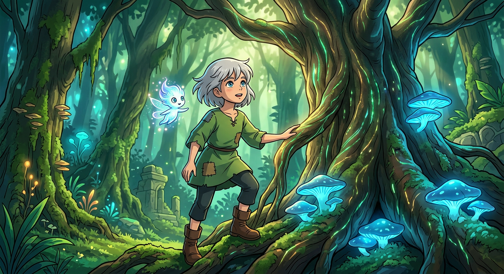
# Chapter VI Summary: "There Was Someone Crying—There Was!"
Rain fell in sheets upon the moor, shrouding everything in gray mist and keeping Mary trapped within the vast, silent house. With nowhere else to turn, she found herself drawn into conversation with Martha, questioning how the Sowerby family passed such dreary days when fourteen souls crowded into four small rooms. Martha spoke of Dickon, who wandered out in any weather, discovering half-drowned fox cubs and young crows that he carried home against his warm chest to nurse back to life. One such crow, black as chimney soot, now hopped about wherever the boy went.
Mary listened with genuine interest—a remarkable thing, for she had long since ceased to resent Martha's plain, familiar manner of speaking. These stories of the moorland cottage, where children tumbled about like rough collie puppies and the mother somehow kept everyone fed and cheerful, held a warmth entirely foreign to the tales Mary's Ayah had told in India. When Mary confessed she had nothing at all to play with, Martha suggested reading, and upon learning there were thousands of books in the library, something sparked within Mary's restless mind.
She would find that library herself. She would explore.
And so, with no one to stop her and no notion that she ought to ask permission, Mary slipped from her room and wandered into the labyrinth of Misselthwaite Manor. Down long corridors she went, up short flights of steps, past door after door after door. Portraits lined the walls—men and women in strange grand costumes of satin and velvet, children in stiff ruffs and puffed sleeves. One plain little girl in green brocade, holding a parrot, caught Mary's attention with her sharp, curious eyes. "Where do you live now?" Mary asked aloud, wishing the painted child might step down and keep her company.
She turned door handles and found rooms unlocked, filled with embroidered hangings and inlaid furniture, old tapestries depicting curious scenes. In one lady's sitting-room, she discovered a cabinet containing a hundred ivory elephants of all sizes, some bearing tiny mahouts on their backs, and she played with them until she grew tired. In that same room, a rustling sound drew her to a velvet cushion where a gray mouse had made her nest, six pink babies curled beside her. Seven living creatures in all those hundred empty rooms—Mary felt oddly comforted.
But weariness overtook her at last, and she turned back, losing her way among the twisting passages until she stood quite still in a short corridor hung with tapestry. In that silence came the sound—a cry, muffled yet unmistakable. A fretful, childish whine. Mary's heart quickened; this was closer than what she'd heard the night before.
Her hand brushed the tapestry and she sprang back in surprise—it concealed a door, and through it came Mrs. Medlock, keys jangling, face dark with anger. The housekeeper seized Mary's arm and dragged her roughly back to the nursery, denying any crying, threatening to box her ears and lock her away.
Mary sat pale upon the hearth-rug after Mrs. Medlock slammed out, grinding her teeth with quiet fury. She did not weep. She had heard that cry twice now, and no amount of denial would convince her otherwise—and though the mystery remained unsolved, she had accomplished something this dreary morning: she had discovered rooms beyond counting, played among ivory elephants, and glimpsed life where she expected only emptiness.
Somewhere in this strange house, someone was crying, and Mary meant to find them.
# The Key to the Garden
Two days after the wind had first called Mary to her explorations, she woke to a world utterly transformed. The rain had ceased its relentless siege upon the moor, and the heavy gray mists had been swept clean away as though they had never dared to linger. In their place hung a sky of such deep, brilliant blue that Mary sat bolt upright in bed, calling out to Martha in wonder. Never in all her years in India, beneath those hot and blazing heavens, had she imagined a sky could sparkle so—cool and fathomless as the waters of some enchanted lake, dotted here and there with small clouds white as snow-fleece. The moor itself had softened from its brooding purple-black to a gentle, almost welcoming blue.
Martha, cheerful as ever among her black lead brushes, declared that spring was indeed on its way, distant though it remained. She painted pictures with her broad Yorkshire words of gorse blossoms golden as sunshine, purple bells of heather, butterflies fluttering by the hundreds, and skylarks soaring and singing—all of it waiting out there on the moor where her brother Dickon spent his days. Mary listened with a wistfulness she had never known before, and when she confessed she should like to see Martha's cottage, something remarkable happened. Martha paused in her work and studied the small, plain face before her. It did not look quite so sour as it had that first morning. There was a softness to it now, a wanting.
Before Martha departed for her day out, an exchange passed between them that would linger in Mary's mind. When Mary declared that no one liked her, not even Dickon would, Martha asked a curious question: "How does tha' like thysel'?" Mary considered this honestly and admitted she did not like herself at all—but she had never thought of it before. It was her mother's wisdom, Martha explained, the kind that could bring a person to their senses with a single question.
Left alone in the great house, Mary found her loneliness pressing close. But the sunshine had worked its magic upon her spirits, and she ran round the fountain garden ten times, counting carefully, until she felt better. She found Ben Weatherstaff in the kitchen-garden, transformed by the weather into something approaching friendliness. He spoke to her of spring stirring beneath the dark earth, of crocuses and snowdrops and daffodils preparing to push their green spikes toward the light. Mary declared she would watch for them.
Then came the robin, hopping close with his red satin waistcoat puffed with importance, and Mary felt such joy that she scarcely dared breathe. She chirped and coaxed, and he flirted his tail and twittered back, allowing her nearer than she had ever dreamed possible. As she watched him hop along the flower-bed, scratching at freshly turned earth where some dog had dug after a mole, Mary noticed something half-buried in the soil—a ring of rusty iron or brass. She reached down and pulled it free.
It was not merely a ring. It was an old key, rusted and ancient, as though it had lain hidden for many long years.
Mary stood trembling, holding it from her finger, her face pale with an almost frightened wonder. "Perhaps it has been buried for ten years," she whispered to herself. "Perhaps it is the key to the garden."
Now she possessed the key—but the hidden door through the ivy-covered wall remained yet to be found.
# The Robin Who Showed the Way
Mary turned the old key over and over in her hands, examining it with all the careful attention of a child who had never been taught to seek permission for anything. She thought only of what it might unlock—that mysterious garden sealed away for ten long years—and wondered what strange transformations had taken place within its hidden walls. The notion seized her imagination: if she could only find the door, she might slip inside whenever she pleased, shut it behind her, and have a secret place entirely her own. No one would know where she had gone. They would believe the door still locked, the key still buried in the earth. This thought pleased her enormously.
Something was awakening in Mary Lennox. Living alone in that great house with its hundred mysteriously closed rooms, with nothing whatever to occupy her time, had set her dormant mind stirring at last. The fresh, strong air blowing across the moor deserved much of the credit—the same air that had given her an appetite and set her blood moving when she fought against the wind. In India she had always been too hot, too languid, too weak to care about much of anything. But here, she was beginning to care. She was beginning to want things. Already she felt less contrary, though she could not have said why.
She walked her special path along the ivy-covered wall, searching for any sign of the hidden door, but the glossy dark leaves revealed nothing. Frustration crept back into her heart—it seemed so foolish to be so near and yet unable to enter. She resolved to carry the key with her always, so that when the moment came, she would be ready.
Martha returned from her night at the cottage with rosy cheeks and wonderful spirits, full of stories about her family gathered round the fire while she told them all about the peculiar little girl from India who had never dressed herself. Mary, rather than taking offense, found herself offering to share more tales of elephants and tiger hunts before Martha's next visit home. When Martha mentioned that her mother worried about Mary being so alone, something softened in the child. "You do cheer me up," Mary admitted quietly. "I like to hear you talk."
Then came the present—a skipping-rope with bright red and blue handles, bought with tuppence from Martha's own wages by her generous mother, who had declared that nothing would do the child more good than skipping outdoors in the fresh air. Mary had never seen such a thing and watched in fascination as Martha demonstrated, counting to a hundred while the portraits on the walls seemed to stare in bewilderment at this common cottager skipping beneath their dignified noses.
When Mary went outside with her new rope, something remarkable happened. She skipped until her cheeks flushed red, until Ben Weatherstaff himself remarked that perhaps she had child's blood in her veins after all, rather than sour buttermilk. The robin followed her, curious about this strange new game, and when Mary stopped to rest along her special walk, she laughed at the little bird perched on the ivy.
"You showed me where the key was," she told him. "You ought to show me the door today."
As if in answer, a sudden gust of wind swept down the walk—stronger than the rest—and swung aside the trailing ivy to reveal what lay beneath: a round iron knob. Mary's heart hammered as she pushed the leaves away and discovered the lock. The key slid in perfectly. It took both hands to turn it, but turn it did.
She looked behind her to be certain no one was watching, then drew back the curtain of ivy, pushed open the door that had been sealed for a decade, and slipped through.
She stood with her back against it, breathing fast with wonder and delight, for she was standing inside the secret garden at last—and now she would discover what mysteries had been sleeping there all these years.
# The Strangest House Anyone Ever Lived In
Mary Lennox stepped through the hidden door and found herself standing within the most mysterious, most enchanting place she had ever beheld in all her life. High walls rose around her, covered so thickly with the leafless stems of climbing roses that they had grown tangled and matted together like a living tapestry turned to winter brown. She knew they were roses—she had seen enough of them in India—though here they slept in their gray and brown branches, waiting for some season yet to come.
The garden spread before her in hushed splendor. Standard roses had grown so wild they resembled small trees, and climbing roses had crept from trunk to trunk, catching at branches and weaving themselves into delicate bridges, their long tendrils swaying like curtains of lace woven from bark and thorn. A hazy mantle of tangled growth spread over everything—walls, trees, even the wintry brown grass—and it was this soft veil of wildness that made the place seem touched by some quiet magic.
"How still it is!" Mary whispered, scarcely daring to breathe. "How still!"
She listened to the silence, and even the robin who had flown to his treetop held himself motionless, watching her with bright eyes. Ten years, she thought. Ten years since any voice had spoken here.
Mary moved through the garden as softly as if afraid of waking someone who slept beneath the earth. She walked under fairy-like arches formed by the roses and wondered if everything was quite dead, or if some spark of life remained hidden beneath the gray. She wished it wasn't dead—oh, how she wished it.
But she was *inside* her secret kingdom now, and she could return whenever she pleased through the door beneath the ivy. The sun shone warm within those high walls, and the sky arched overhead in brilliant blue, softer somehow than even the sky above the moor. The robin hopped busily from bush to bush, chirping as though showing her about his estate.
Then Mary discovered something wonderful. In an old flowerbed, she spied pale green points pushing through the black earth—tiny growing things that might be crocuses or snowdrops or daffodils. She knelt down, breathing in the fresh damp scent of soil, and her heart lifted. The garden was not quite dead after all.
She spent hours clearing away the choking grass and weeds, working until her cheeks flushed red and she cast off both coat and hat, smiling without knowing it. The robin watched approvingly, pleased that someone had finally begun proper gardening on his grounds. By the time Mary remembered her midday dinner, she had uncovered dozens of pale green shoots, and she had been actually, thoroughly happy.
At lunch, Martha marveled at the child's appetite—two pieces of meat and two helpings of rice pudding! When Mary asked about the white root-bulbs she had found, Martha explained how they lived for years underground, spreading and multiplying without any help at all. This gave Mary an idea, and soon she was planning how to obtain a spade and seeds, careful to guard her secret from Mr. Craven, who would surely lock the garden forever if he knew.
Martha proved wonderfully helpful, suggesting they write to her brother Dickon, who could purchase tools and seeds in Thwaite village. Mary printed the letter herself, her thin hands trembling with excitement at the thought of bringing the garden back to life.
Yet even as hope bloomed within her, mystery stirred in the great house. That afternoon, while waiting for Martha, Mary had wandered down the corridor and heard again that strange, distant crying—the same sound she had heard before. Martha grew nervous when Mary mentioned it, warning her not to go walking about where she shouldn't.
"It's the strangest house anyone ever lived in," Mary murmured drowsily as evening settled around her, and with the pleasant weariness of fresh air and honest work warming her limbs, she fell asleep in the armchair—unaware that the secrets of Misselthwaite Manor ran far deeper than even a hidden garden could hold.
# Chapter Summary: Dickon
For nearly a week, the sun poured its golden warmth upon what Mary had come to call the secret garden—a name that suited the place wonderfully, for it seemed to her like being shut away in some fairy kingdom where no one in all the world knew to look for her. She had read of such gardens in her fairy stories, where folk sometimes slept for a hundred years, though she herself had no intention of sleeping. Indeed, quite the opposite was happening to Mistress Mary. Each day at Misselthwaite found her wider awake than the last, her legs growing stronger, her lungs drinking in the moor wind she had once despised. She could skip to a hundred now, and the bulbs beneath the dark earth seemed to feel the change as keenly as she did—pushing up their pale green points everywhere, cheered by the sunshine and rain that could reach them at last through the cleared soil.
Mary worked with the steady determination that was her nature, digging and weeding until her stockings grew tight round legs that had once been thin as sticks. Ben Weatherstaff noticed the change in her, remarking gruffly that she no longer looked like a young plucked crow, though he delivered even compliments with a scowl. Their unlikely friendship deepened during that week of sunshine, bound together by their mutual affection for the robin, who flirted his red waistcoat at them both with shameless vanity. When Mary pressed the old gardener about roses—whether they could survive being left to themselves, whether one might tell if they were dead or alive—he answered her questions with growing suspicion until he snapped at her to stop asking so many and sent her on her way.
Yet Mary did not mind his crossness, for she had begun to collect people she liked in spite of themselves.
It was while skipping along the laurel walk that she heard a strange, low whistling and discovered its source: a boy of about twelve sitting beneath a tree, playing a rough wooden pipe while a squirrel clung to the bark beside him, a pheasant peeped from the bushes, and two rabbits sat perfectly still, their noses trembling. This could only be Dickon—Martha's brother who charmed wild creatures as surely as the natives in India charmed snakes.
He was a funny-looking boy with rust-colored curls, cheeks red as poppies, and eyes round and blue as a summer sky. About him hung the clean, fresh scent of heather and grass, and his speech was as quick and easy as running water. He had brought the garden tools and seeds Mary had asked for, and as they sat together on a log examining packets of mignonette and larkspur and poppies, the robin called to them from a holly bush bright with berries.
When Dickon asked where her garden was, Mary felt herself go hot and cold. She clutched her hands together, terrified and desperate, until at last the words burst from her: she had stolen a garden. It belonged to no one, wanted by no one, perhaps already dead—but she cared for it, and that surely gave her the right. She flung her arms over her face and wept, this contrary, passionate little girl who had never wept for herself before.
Dickon's blue eyes grew soft with wonder and sympathy. He could keep secrets, he told her gently—secrets of fox cubs and bird nests and all the wild things of the moor. And so Mary led him through the ivy-covered door, into the grey and tangled mystery of her hidden kingdom.
He looked round and round, his breath catching in his throat, and whispered that it was a queer, pretty place—like being in a dream.
And standing there together in that dreaming place, neither of them yet knew what wonders the secret garden would work upon them both.
# The Nest of the Missel Thrush
For several hushed, reverent minutes, Dickon stood within the secret garden's walls, his eyes traveling over every gray-barked tree, every trailing creeper, every tangled mass of wild growth that had claimed the space as its own. He moved more softly even than Mary had on that first miraculous day of discovery, as though he understood instinctively that this forgotten place demanded a certain quiet respect.
"I never thought I'd see this place," he whispered at last, and when Mary spoke aloud in reply, he quickly silenced her with a gesture. They must speak low, he warned, lest someone wonder what stirred within these hidden walls. Martha had told him of the garden no one entered, he confessed, and he and his family had often wondered what mysteries lay behind its locked door. Now, gazing about at the lovely gray tangle surrounding them, his round eyes shone with a queer happiness, and he spoke of the nests that would fill these branches come spring—the safest nesting place in all England, surely, where no one ever came and roses and trees offered endless shelter for building.
When Mary asked breathlessly whether there might still be roses, whether they had not all perished in the years of neglect, Dickon's answer brought her more hope than she had dared imagine. He stepped to the nearest ancient tree and drew out his thick knife, showing her how to distinguish dead wood from living—how a brownish-green shoot meant life, how "wick" meant alive. Mary touched the living branch with something like reverence, and together they moved from tree to bush to tangled climber, counting the survivors. The strongest had thrived on their wildness, Dickon explained, while only the most delicate had died away. He knelt to cut through a lifeless-looking branch and revealed the green heart within, promising that with proper care there would be a fountain of roses blooming by summer.
For half an hour they worked side by side, Dickon wielding his knife with knowing skill while Mary followed with fork and trowel, learning to recognize even the faintest shade of moist green beneath dry bark. When Dickon discovered the little clearings Mary had made around the pale shoots pushing through the grass, his surprise and approval warmed her more than any praise she had ever received. She had done exactly right, he told her—those were crocuses and snowdrops, narcissuses and daffydowndillys, and they would grow now like Jack's beanstalk.
As they worked, Mary confided that she was growing stronger and fatter, that she no longer felt tired as she once had, and Dickon nodded wisely, speaking of the rare goodness of clean earth and fresh growing things and rain falling on the heather. When she begged him to return and help her, he promised stoutly to come every day, rain or shine, calling it the best fun he had ever known—shut in here, wakening up a garden. They agreed the garden must never be made tidy and proper, must remain wild and secret. Yet Dickon noticed something strange: signs of pruning done more recently than ten years past, though the door had been locked and the key buried.
The morning passed in joyful labor, and Mary found herself telling Dickon of India, of Basil and his taunting rhyme, and wondering aloud about flowers shaped like bells. She confessed she liked him, making him the fifth person she had ever cared for, and asked in his own Yorkshire tongue whether he liked her in return. He answered heartily that he did, and so did the robin, he believed.
When the clock struck noon, Mary could scarcely bear to leave, half-fearing Dickon might vanish like a wood fairy. At the garden door she turned back and made him promise never to tell her secret.
"If tha' was a missel thrush an' showed me where thy nest was, does tha' think I'd tell anyone?" he said around his first bite of bread and bacon. "Not me. Tha' art as safe as a missel thrush."
And as Mary hurried toward the house, her heart full of new friendship and living roses, she knew with perfect certainty that her secret—and her garden—rested in the safest hands imaginable.
# Chapter XII Summary: "Might I Have a Bit of Earth?"
Mary arrived breathless at her room, cheeks flushed pink and hair windswept from her morning's adventure, bursting with news that tumbled out before Martha could even remark upon her tardiness. She had seen Dickon—and she thought him beautiful. Martha, delighted but somewhat bewildered by this assessment of her brother, pointed out his turned-up nose, his round eyes, his wide mouth, as though cataloguing imperfections. But Mary would hear none of it. She loved his nose, adored his round eyes that matched the color of the moor sky, wished her own mouth were just as big. The two girls talked of seeds and garden tools, and Martha advised that if Mary wanted a corner of earth for planting, she ought to ask old Ben Weatherstaff rather than the grand head gardener. Surely no one could mind if she took a bit of ground that nobody wanted.
But Martha had weightier news to deliver. Mr. Craven had returned to Misselthwaite Manor and wished to see Mary before departing again on his travels. The revelation struck Mary cold with dread. She knew he had not wanted to see her when she first arrived—had heard as much from the servants. Yet Martha explained that Susan Sowerby herself had stopped Mr. Craven on the moor and spoken to him about the child, putting it into his mind that he ought to see her.
Mrs. Medlock arrived in her best black dress to escort Mary to the master's study. All the rosy warmth drained from Mary's face as she felt herself hardening back into that stiff, plain, silent creature she had been in India. She followed in silence through unfamiliar corridors until they reached the room where Mr. Craven sat before the fire—not the hunchback she had imagined, but a man with high, crooked shoulders and a face that might have been handsome had it not been so utterly wretched with grief.
Their conversation was halting and awkward. He confessed he had forgotten her entirely, had meant to arrange a governess but never did. Mary, summoning what courage she could muster, begged him not to send one yet. She wanted only to play outdoors, to run on the moor, to grow strong. Mr. Craven, moved perhaps by Susan Sowerby's sensible words, granted her wish. She might do as she liked, go where she pleased. And when he asked if she wanted anything—toys, books, dolls—Mary's eager heart spoke before her careful mind could stop it.
"Might I have a bit of earth?"
The strange request startled him, but as Mary explained her longing to plant seeds and watch things grow, something shifted in his miserable face. He seemed to see someone else in her—someone who had loved the earth and growing things. He told her she might have as much earth as she wanted, anywhere she found it. She should take it and make it come alive.
Mary flew back to her room with the glorious news, then hurried to the secret garden, anxious that Dickon might have gone. And indeed he had—the garden stood empty but for the robin perched on a rose-bush. Yet pinned to the bush with a thorn was a scrap of paper bearing a rough drawing of a nest with a bird upon it, and beneath it, words that lifted her heart: *I will cum bak.*
With Mr. Craven's blessing secured and Dickon's promise left behind like a covenant, Mary now possessed everything she needed to bring the sleeping garden back to life.
# Summary of Chapter XIII: "I Am Colin"
The evening after Dickon's visit, Mary showed Martha the picture he had drawn—a missel thrush upon her nest—and understood at once the tender message hidden within it. Dickon meant her to know that her garden was safe, that he would guard her secret as fiercely as any bird protects its young. The thought of him warmed her, and she fell asleep anticipating his return.
But Yorkshire weather cares nothing for children's wishes. Mary woke in the deep of night to rain lashing against her window, the wind wuthering round the old house like something alive and grieving. She lay in the darkness, miserable and contrary, hating the storm for keeping her from the garden. Yet as she turned restlessly upon her pillow, another sound threaded through the tempest—a faint, fretful crying that was not the wind at all.
This time, Mary would not be deterred. She slipped from her bed, took up her candle, and ventured into the long, shadowed corridor. Her heart hammered as she felt her way through the darkness, following that thin, piteous sound until she reached the tapestry-covered door Mrs. Medlock had forbidden her to seek. Beyond it, firelight flickered beneath another door, and Mary pushed it open to discover what had been hidden from her all along.
A boy lay upon a great carved bed, his face sharp and pale as ivory, his gray eyes enormous with surprise and fear. He thought her a ghost; she thought him a dream. But when she let him touch the wool of her wrapper, when she offered to pinch him to prove she was real, they both began to believe.
His name was Colin Craven—the son no one had ever mentioned, the child Mr. Craven could not bear to see. Colin had been ill all his life, confined to this room by his own stubborn will and by the household's fearful silence. He believed he would die young, perhaps become a hunchback like his father, and he spoke of it with the weary indifference of one who had heard the same dreary prophecy since infancy. Everyone was obliged to please him, he said, for he was master of Misselthwaite whether he lived or not.
Mary recognized something of herself in this strange, imperious boy—the same loneliness, the same fierce pride, the same hunger for something to care about. And when she let slip a word about the locked garden, Colin seized upon it with sudden, startling passion. He demanded to know everything: where the door was hidden, why it had been sealed away, who had buried the key. He wanted to be taken there at once, to command the servants to open it for him.
But Mary could not bear the thought of her secret being trampled by orders and wheelchairs and curious eyes. She pleaded with him, painting a picture of a hidden world where they might slip through the ivy together, where they could watch the spring push up through the earth and tend the roses in secret. The garden would be their nest, she told him—safe and wild and belonging only to them.
Colin lay very still, his strange eyes softening. He had never had a proper secret before, he admitted, nothing but the dark knowledge that he would not live to grow up. This kind of secret was better. He would wait. He would let Mary find the way in, and together they would make the garden their own.
At last, when his eyelids grew heavy and his voice slurred with sleep, Mary did what her Ayah had once done for her in India—she stroked his hand and sang a low, lilting song until his breath steadied and his lashes lay dark upon his pale cheeks. Then she took her candle and crept softly away, leaving behind a boy who, for the first time in his solitary life, had found a companion who understood the fierce, fragile hope of having something to live for.
Now there were two children bound together by secrets—and both of them longing for the spring.
# A Young Rajah
The morning came shrouded in mist, with rain still pouring steadily across the moor, trapping everyone indoors and filling Mary with the urgent need to unburden her secret. In the afternoon, she summoned Martha to the nursery, and the moment they sat down together, Martha's knowing eyes saw that something was different.
"Tha' looks as if tha'd somethin' to say," she observed, her knitting needles pausing.
And so Mary told her everything—how she had heard the crying in the night, followed it through the dark corridors, and discovered Colin. Poor Martha went pale with fright, certain she would lose her place, that Mrs. Medlock would blame her for breaking orders. But Mary assured her that Colin was glad she had come, that he had wanted her to stay, that she had talked to him about India and gardens and the robin until she had sung him to sleep.
Martha could scarcely believe it. She spoke of Colin's terrible tempers, how he would scream and throw himself into passions, how he knew the servants dared not call their souls their own. It was like walking into a lion's den, she said. Yet somehow Mary had walked in and emerged unscathed.
The story of Colin unfolded then—how Mr. Craven had gone nearly mad when the boy was born, raving that the child would be a hunchback like himself and had better die. Colin had never been right from the start, kept lying down, forbidden to walk, once forced into a brace that made him ill with fretting. Doctors had disagreed, medicines had been poured into him, and through it all he had grown spoiled and tyrannical. Martha recalled the time Mrs. Medlock had thought Colin unconscious during his typhoid fever and said aloud that he would die and it would be best for everyone—only to find him staring at her with perfect sense, demanding water and telling her to stop talking.
Mary sat looking into the fire, wondering. "I wonder if it would not do him good to go out into a garden and watch things growing," she said slowly. "It did me good."
But Martha shook her head, telling of Colin's fits and rages, how once a gardener had merely looked at him and Colin had convinced himself the man thought him a hunchback, crying himself into a fever.
Soon a bell rang, and Martha was called away. When she returned, her face held wonder. Colin had dismissed the nurse, ordered Martha to the next room, and demanded that Mary Lennox be brought to him at once. "Tha' has bewitched him," Martha said.
Mary found Colin propped on his sofa in the daylight, wrapped in velvet, looking like a picture against rich hangings and glowing colors. A bright fire burned on the hearth. He had been thinking of her all morning, he said, and she had been thinking of him.
When Martha was summoned and stood trembling before him, Colin exercised his power like a young rajah. "Has Medlock to do what I please?" he demanded, and Martha admitted that everyone had to obey him. Then let no one dare to punish Martha for doing what he commanded. "What I want is your duty," he declared grandly, dismissing her with a wave.
Mary told him he reminded her of a boy rajah she had once seen in India, dripping with rubies and emeralds, commanding absolute obedience. But she also told him he was very different from Dickon. When Colin asked who Dickon was, Mary found herself speaking of Martha's brother—the boy who could charm foxes and squirrels and birds, who played soft tunes on his pipe and made wild creatures listen, who knew all about eggs and nests and things that grew on the moor.
Colin listened with widening eyes, the spots on his cheeks burning brighter. The moor, Mary told him, was not dreary at all but alive with thousands of creatures busy and happy in their own world. Colin said he could never go there. He was going to die. Mary answered unsympathetically that she didn't like the way he talked about dying—he almost boasted about it. When Colin insisted everyone wished him dead, even his father, Mary said obstinately that she didn't believe it.
A long silence fell between them. Then Mary told him what the London doctor had said aloud: "The lad might live if he would make up his mind to it." Perhaps Dickon could put him in the humor, she suggested. Dickon never talked about dead things.
"Don't let us talk about dying," she said firmly. "Let us talk about living."
And so they did. They talked of Dickon and the moor and the cottage with fourteen people living on sixteen shillings a week, of children growing fat like wild ponies, of pale green points pushing up through black soil. They laughed together as children will when they are happy, making such a racket that they quite forgot Colin was meant to be ill—until they suddenly remembered they were cousins, which only made them laugh harder.
Into this merriment walked Dr. Craven and Mrs. Medlock, startled and alarmed. But Colin dismissed their concerns like a true rajah, declaring that Mary was his cousin, that he liked her, and that she would come whenever he sent for her. The doctor's warnings about excitement fell on deaf ears.
"I want to forget it," Colin said, meaning his illness. "She makes me forget it."
As tea was brought in and hot muffins set before them, Colin fixed Mary with his strange dark-lashed eyes and commanded, "Tell me about Rajahs"—ready at last to listen rather than rule, to be entertained rather than feared, opening himself to possibilities that had never before entered his shuttered world.
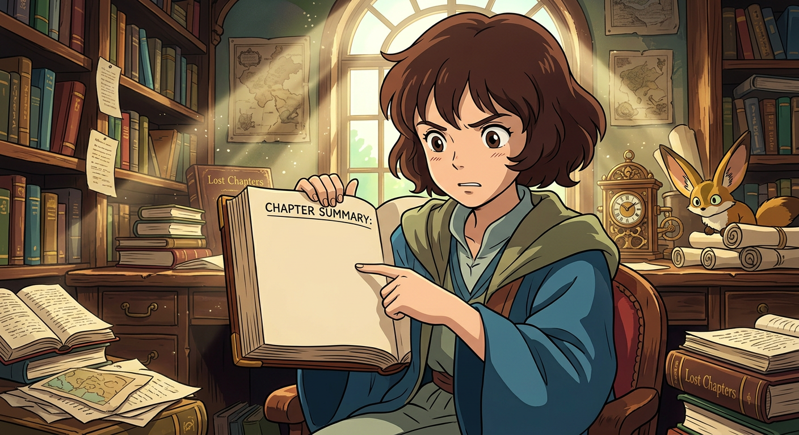
# Chapter Summary: Nest Building
After a week of dreary rainfall had kept Mary indoors, the sky finally broke open into a great arch of blue, and warm sunlight came flooding back across the moor. But the wet days had not been wasted—not in the least. Mary had spent nearly every waking hour in Colin's room, and something remarkable had begun to happen between them. They talked of Rajahs and gardens and Dickon's cottage, pored over splendid books and pictures, and read aloud to one another until the hours slipped away unnoticed. Mrs. Medlock herself remarked upon the change—how Colin had not thrown a single tantrum or whining fit since Mary had befriended him, how even the nurse who had been ready to abandon her post now found the work bearable.
Throughout these conversations, Mary had been careful, almost cunning. She wanted desperately to know whether Colin could be trusted with her great secret, whether he might one day be brought to the hidden garden itself. She had observed how he delighted in the very idea of a garden no one knew about, and gradually she tested him, asking why he hated to be looked at. Colin explained how strangers had always stared and whispered that he would not live to grow up, how ladies had patted his cheeks and called him "Poor child" until once he had screamed and bitten one of them. Yet when Mary asked whether he would mind if a boy looked at him, Colin grew thoughtful and admitted there was one boy he believed he could bear—Dickon, the animal charmer. "He's a sort of animal charmer and I am a boy animal," Colin said, and they both laughed at the notion of him hiding in his hole like a creature of the wild.
On that first morning when the sun returned, Mary woke before anyone else and ran to the window to find the whole world transformed. The moor had gone blue, tender birdsong fluted from every direction, and warm scented air rushed in upon her. She could not wait another moment. She dressed in five minutes, crept down in her stocking feet, and bounded out onto the grass, which seemed to have turned green overnight. Crocuses were unfurling in purple and gold, green points were pushing through everywhere, and springtime had taken hold of everything.
When she reached the secret garden, she found Dickon already there, kneeling on the grass with his little fox cub Captain at his side and his crow Soot perched upon his shoulder. He had been up before the sun, he said, unable to stay abed when the world was working and humming and nest-building all around him. Together they ran from one wonder to another, discovering swelling leaf buds, breathing in the warm earth, digging and pulling until Mary's cheeks were poppy red and her hair as wild as Dickon's own.
Then came a moment more wonderful still—the robin darted past with a twig in his beak, building his nest in a close-grown corner. Dickon whispered that they must sit still as grass and trees, for a bird setting up housekeeping grows shy and easily frightened off. While they waited, Mary told Dickon about Colin, and Dickon admitted he had always known of the boy but had never spoken of him. Now the two of them wondered aloud whether Colin might be brought to the garden, whether watching buds break on the rose-bushes might heal him better than any doctor's medicine.
As they talked, the robin worked on above them, and when at last he flew away with his twig, Mary felt certain he would keep their secret—just as she and Dickon were keeping theirs, and perhaps soon, Colin would keep it too.
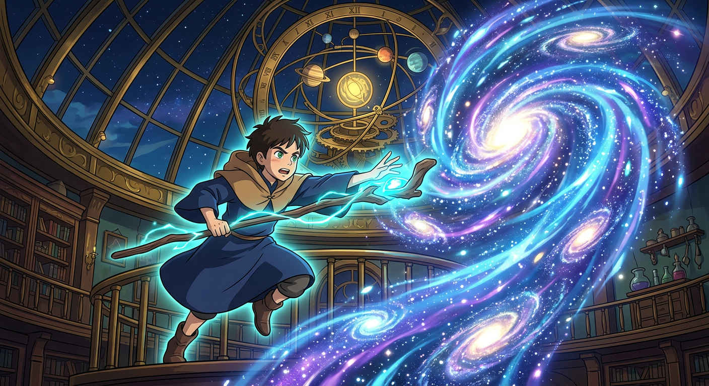
# Chapter Summary: "I Won't!" Said Mary
The morning had been glorious in the secret garden, and Mary lost herself so completely in the work of tending it alongside Dickon that Colin simply slipped from her mind. When at last she remembered him, she sent word through Martha that she was too busy to come—and Martha's frightened expression told her plainly this would not go over well. But Mary was not the sort of girl who sacrificed her own pleasures for others, and besides, Dickon was waiting.
The afternoon proved even more enchanting than the morning. Together, Mary and Dickon cleared weeds, pruned roses, and dug around the trees until the wild, sleeping garden began to show signs of the magnificent awakening to come. Dickon spoke of apple blossoms and cherry blossoms overhead, of peach and plum trees blooming against the walls, of grass becoming a carpet of flowers. His creatures—the little fox cub, the rook called Soot, the robin and his mate—busied themselves about the garden too, and when Dickon played his wooden pipe, even the squirrels came to listen.
Mary herself was transforming. Dickon noticed it plainly—she was growing stronger, her cheeks glowing with exercise and fresh air, her hair thickening, her body filling out. She felt it too, this new vitality coursing through her, and she spoke of it with something like triumph.
When the sun began its golden descent through the trees, Mary hurried back to the house, eager to share everything with Colin—the fox, the rook, the magic of spring spreading across the garden. But Martha met her with a doleful face. Colin had watched the clock all afternoon. He had very nearly worked himself into one of his tantrums.
Mary found him lying flat in bed, refusing to look at her. What followed was not a visit but a battle. Colin threatened to send Dickon away; Mary threatened never to return. They hurled accusations of selfishness at each other like stones, their tempers flashing and snapping. Colin insisted he was dying; Mary told him flatly she didn't believe it—that he was too nasty to die, that he only said such things to make people feel sorry for him. Enraged, Colin threw his pillow at her and ordered her out.
Outside Colin's door, the nurse stood laughing into her handkerchief. She declared it was the best thing that could happen to the pampered boy—to finally meet someone as spoiled as himself who would stand up to him.
Mary retreated to her room, cross and disappointed, her plans of sharing the garden's secrets utterly ruined. But waiting for her was an unexpected gift from Mr. Craven: beautiful books about gardens, games, and a lovely writing-case with a gold pen. Her anger softened as she examined each item, her hard little heart warming at being remembered.
Later, alone with her thoughts, Mary recalled how Colin's fears about his back—his terror of becoming a hunchback like his father—always seemed to surface when he was cross or tired. Perhaps he had spent the whole afternoon thinking about it. She had sworn never to go back, but standing there in the quiet of her room, she began to reconsider—perhaps, just perhaps, she would see him in the morning after all.
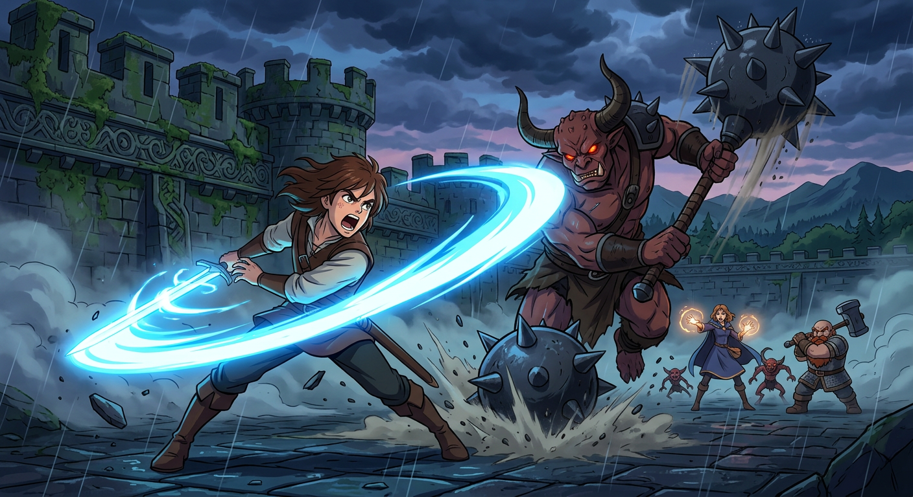
# A Tantrum
Mary had spent the day working hard in the garden with Dickon, and by the time Martha brought her supper, weariness had settled deep into her bones. She fell into bed with thoughts of returning to the garden before breakfast, and perhaps afterward paying a visit to Colin. Sleep came quickly, wrapping her in its quiet darkness.
But the middle of the night shattered that peace entirely.
Dreadful sounds tore through the corridors of Misselthwaite Manor—doors slamming, feet hurrying, and above it all, someone screaming and sobbing in a way that made Mary's blood run cold. She knew at once it was Colin, seized by one of those terrible fits the nurse had called hysterics. The awful noise explained everything—why the servants gave him whatever he wanted, why no one dared cross him. Mary pressed her hands over her ears, feeling sick and shivering, quite unable to bear it.
Yet as the screaming continued, something shifted within her. Fear gave way to fury. She was not accustomed to anyone's temper but her own, and this horrible display began to make her angry enough to stamp her foot and declare that somebody ought to stop him—somebody ought to beat him.
The nurse burst in, pale and frantic, begging Mary to come and try reasoning with the boy. He liked her, after all, and no one else could do a thing with him. Mary protested that Colin had turned her out that very morning, but the nurse seemed almost pleased by her indignation. Here was a child who would not cower—here was someone who might actually match Colin's fury with her own.
Mary flew down the corridor, her temper mounting with every step. By the time she reached Colin's room, she felt quite wicked. She slapped the door open and marched to his bed, shouting that she hated him, that everybody hated him, that she wished he would scream himself to death. It was neither kind nor sympathetic, but it was precisely the shock that hysterical, indulged Colin needed. No one had ever dared speak to him so.
He stopped screaming, startled into silence, his face dreadful and swollen with tears. Mary threatened to scream louder than he could, to frighten him as he frightened others. When Colin sobbed that he could not stop, that he had felt a lump on his back and would surely die, Mary countered with fierce certainty: it was only hysterics making lumps, nothing more. She commanded the nurse to bare his back, and there she examined his thin, visible spine with savage solemnity.
There was no lump. Not one as big as a pin. Only the natural ridges of backbone, which Mary herself possessed.
The words struck Colin like a revelation. Had anyone ever told him the truth so plainly? Had he ever been allowed to ask questions about his terrors? Lying alone in that great dark house, surrounded by fearful, exhausted people, he had created much of his own illness. Now this angry, unsympathetic girl insisted he was not dying—and somehow, he believed her.
Exhausted and gentle after his storm, Colin reached for Mary's hand. She met him halfway, and a kind of peace settled between them. He spoke of going outside with her, of wanting to see Dickon and his creatures, stopping himself just in time before mentioning the secret garden aloud.
As the household quieted and the nurse slipped away, Mary stayed beside Colin's bed, holding his hand. She began to whisper softly of the hidden garden—the roses climbing and tangling, the daffodils pushing through dark earth, the green gauze of spring creeping over everything, the robin perhaps building its nest in that safe, still place.
And Colin, at last, fell asleep—dreaming, perhaps, of a world beyond his sickroom walls, where healing might truly begin.
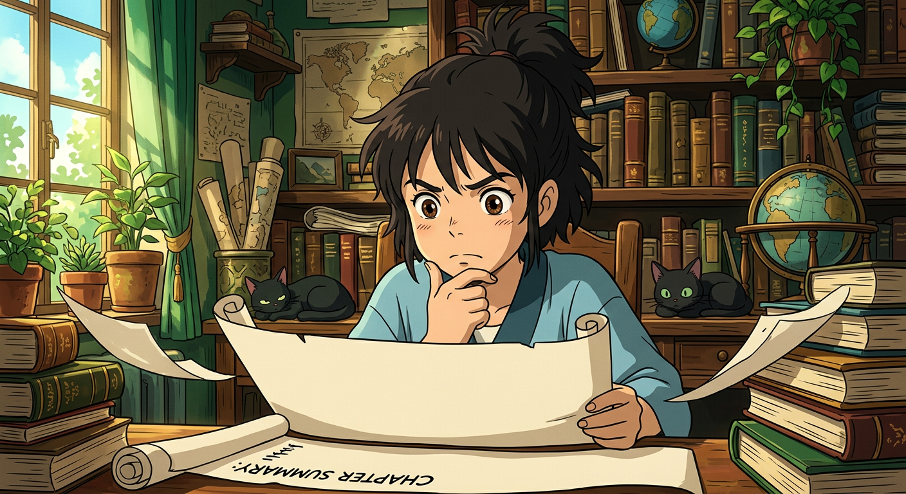
# Chapter Summary
Mary slept late the following morning, exhausted from the previous night's confrontation, while Colin lay ill and feverish in his bed—the inevitable aftermath of one of his terrible crying fits. Yet something had shifted between them. When Martha delivered Mary's breakfast, she brought word that Colin wished to see her, and the boy had even said "please"—a courtesy so foreign to his nature that Martha marveled at it.
Mary's first instinct was to run to the garden and find Dickon, but she checked herself. She would go to Colin first, tell him something that might kindle hope in that pale, shadowed face of his. When she appeared at his bedside with her hat on, ready for the outdoors, Colin looked momentarily disappointed, but his spirits lifted the instant Mary mentioned the garden. He had dreamed of it all night, he confessed—dreamed of standing amidst trembling green leaves while birds nested softly all around him. The vision had come from Mary's own words, that image of gray changing into green, and now it lived inside him like a promise.
In the garden, Dickon waited with his creatures—the fox Captain, the crow Soot, and two new companions: squirrels named Nut and Shell who leaped to his shoulders at the sound of their names. As Mary told him about Colin, something changed in Dickon's expression. He looked up at the sky, listened to the birds calling to one another, breathed in the sweet spring air—and then spoke with quiet urgency about that poor lad shut away indoors, seeing so little of the world that his thoughts turned dark and screaming. They must get him outside, Dickon said, must soak him through with sunshine and birdsong and the smell of growing things. And they must not waste any time about it.
Mary practiced her Yorkshire dialect, delighting Dickon with her efforts, and together they hatched their plan: Dickon would visit Colin tomorrow with his creatures, and when the garden had grown a bit more—when leaves had unfurled and perhaps a bud or two had opened—they would bring Colin out and show him everything.
When Mary returned to Colin's room, she carried the moor on her skin and in her hair. Colin sniffed at her like a young animal discovering something wonderful—she smelled of flowers and fresh things, of wind and grass and springtime itself. Mary spoke to him in broad Yorkshire, and the effect was magical. Colin began to laugh, really laugh, and Mary laughed with him until the room echoed and Mrs. Medlock stood astonished in the corridor, scarcely believing her ears.
They talked for hours—of Dickon's creatures, of the shaggy pony Jump with his velvet nose, of what it meant to be friends with wild things. Colin confessed that he had never had anything to be friends with, that he couldn't bear people. But he could bear Mary. He even liked her, strange as it seemed. And when he apologized for mocking her comparison of Dickon to an angel, Mary admitted that perhaps a Yorkshire angel would look exactly like Dickon—turned-up nose, patched clothes, and all—knowing how to make green things grow and how to speak to creatures who trusted him for sure.
Then came the moment Mary had been building toward. She took both of Colin's thin hands in hers and made him promise he could be trusted. When he whispered his yes, she told him everything—that Dickon would come tomorrow, that there was a door into the secret garden hidden beneath the ivy, and that she had found it weeks ago. Colin's reaction trembled between joy and terror: would he live to see it, to enter it? Mary's practical indignation cut through his hysteria like fresh air, and soon he was calm again, listening enraptured as she described not an imagined garden but the real one—the one she had kept secret until she could be certain of him.
Now that the truth lay between them, bright and fragile as new growth, the three children stood ready to bring Colin into the garden's healing embrace.
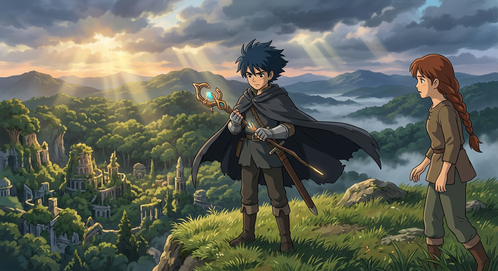
# Chapter Summary
The morning after Colin's terrible tantrum, Dr. Craven arrived at Misselthwaite Manor expecting the usual dreary scene—a white, shaking boy lying in bed, sulky and hysterical, ready to burst into fresh sobbing at the slightest provocation. But what greeted him instead left him utterly astonished.
Mrs. Medlock had warned him, of course, telling him he would scarcely believe his eyes. That plain, sour-faced child had somehow bewitched Colin, she said. The girl had flown at him like a little cat the night before, stamping her feet and ordering him to stop screaming—and miraculously, he had stopped.
When the doctor entered Colin's room, he found the boy sitting up straight on his sofa, chattering and laughing with Mary over pictures of delphiniums and larkspurs in garden books. Colin announced, rather like a young Rajah, that he intended to go outside in his chair if the weather was fine. Fresh air, he declared, would not tire him in the least. Dr. Craven could hardly believe this was the same child who had once shrieked that fresh air would give him cold and kill him. Colin insisted he would not have the nurse accompany him—only his cousin, and a strong boy named Dickon to push his carriage.
The doctor felt a curious mixture of relief and alarm. He was not an unscrupulous man, though he was a weak one, and while he privately knew that if this tiresome boy should get well, he himself would lose any chance of inheriting Misselthwaite, he could not wish the child actual harm. When Mary spoke up to vouch for Dickon's trustworthiness, even slipping into Yorkshire dialect as she did so, Dr. Craven's serious face relaxed. Dickon, he knew, was as strong and steady as a moor pony.
After a remarkably short visit—no medicine given, no disagreeable scenes endured—Dr. Craven departed, deeply puzzled. Downstairs, Mrs. Medlock shared Susan Sowerby's wisdom about children needing other children, and her shrewd philosophy about not grabbing at the whole orange, peel and all.
That night, Colin slept without waking once. When morning came, he lay smiling, feeling as though tight strings that had bound him had loosened and let him go. His mind filled with plans and pictures of the garden, of Dickon and his creatures. Then Mary burst into his room, breathless and pink-cheeked, bringing with her the scent of fresh air and leaves.
"It has come!" she cried. "The Spring! Dickon says so!"
Colin's heart beat with joyful excitement. He called for the window to be thrown open, and freshness and birdsong poured through. Mary described the earth crowding with life, the flowers uncurling, the green veil covering the gray, and—most wonderful of all—Dickon was coming with his fox, his crow, his squirrels, and a newborn lamb he had rescued from the moor.
When Dickon arrived, Colin stared in wonder and delight. The boy placed the lamb on Colin's lap, and the little creature nuzzled into his velvet dressing-gown, searching for warmth and milk. As Dickon fed the lamb from a bottle, questions poured from Colin, and the room filled with easy talk of gardens, wild creatures, and the secret place waiting for them outside.
With spring breathing through the open window and new friends gathered around him, Colin's transformation had truly begun—and soon, very soon, he would see the garden for himself.
# Chapter Summary
The promise of the secret garden had to wait more than a week, as first the wind blew wild across the moor and then Colin caught the threat of a cold—either circumstance might once have sent him into one of his legendary rages. But there was far too much delicious scheming to occupy his mind for tantrums now. Nearly every day Dickon slipped into the sickroom, if only for a few stolen minutes, bearing tales of the wild world awakening outside: otters and badgers busily constructing their homes, water-rats bustling along stream banks, birds weaving nests with desperate urgency. The whole underworld of creatures worked and scuffled to prepare for the season, and hearing Dickon speak of it with such intimate knowledge made one fairly tremble with excitement.
Yet nothing absorbed them quite so thoroughly as plotting Colin's secret transport to the garden. The mystery of the place had become, in Colin's mind, its greatest treasure—not a soul must suspect, not a whisper must escape. They charted their course with the gravity of generals planning a campaign: up this path, round the fountain beds where Mr. Roach had arranged the bedding-out plants, through the shrubbery walks until they reached the long ivied walls. Everything must appear perfectly ordinary, perfectly rational.
When Mr. Roach, the head gardener, received the unprecedented summons to Colin's room, rumors had already crept through the servants' hall of strange goings-on in the invalid's apartments. The man had never glimpsed the boy and knew only wild tales of a humped back, helpless limbs, and insane tempers. What he found instead was a young Rajah holding court amid a menagerie—Dickon kneeling with a lamb at the bottle, a squirrel perched on his back, a large crow announcing visitors from its carved chair. With lordly authority that made Roach nearly laugh once safely in the corridor, Colin issued his commands: no gardener was to come near the Long Walk that afternoon, nor any afternoon he chose to venture out.
At last the hour arrived. The strongest footman carried Colin downstairs, and Dickon began pushing the wheeled chair along paths emptied of every gardener and garden lad as if by enchantment. Colin lifted his pale face to a sky so high and blue it seemed made of crystal, breathing in the wild sweet scent of gorse from the moor, listening with his great eyes to the humming and singing of unseen life. They wound through shrubberies, past fountain beds, speaking in whispers as they neared the ivied wall. Mary pointed to each sacred spot—where she had walked and wondered, where the robin had flown over, where she had found the buried key.
Then she pulled back the hanging curtain of ivy, and Dickon pushed the chair through with one strong, steady, splendid motion.
Colin covered his eyes until the door closed behind them. When at last he looked, the garden wrapped itself around him in a veil of tender green leaves, splashes of gold and purple and white, pink blossoms floating above, wings fluttering, sweet scents drifting—and the sun falling warm upon his ivory face like a gentle hand. A pink glow crept over him, color blooming where none had been, and Mary and Dickon stared in wonder at the transformation.
"I shall get well!" he cried out, his voice ringing with sudden, fierce certainty. "Mary! Dickon! I shall get well! And I shall live forever and ever and ever!"
Now the garden had claimed its newest keeper, and whatever magic lived within those walls had already begun its quiet, extraordinary work.
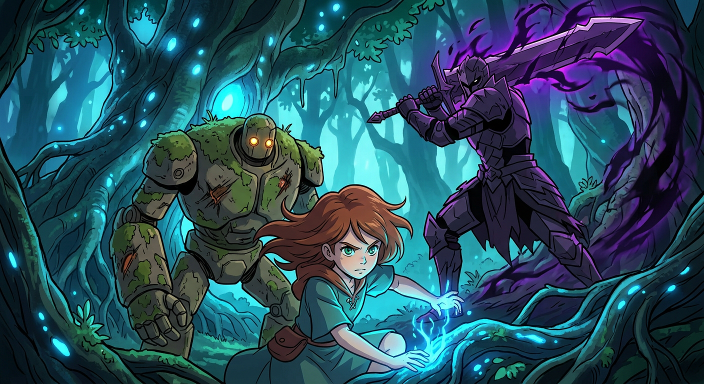
# Chapter XXI: Ben Weatherstaff
There are moments in life when one feels certain of living forever—standing alone at dawn as the pale sky flushes with mysterious light, or lingering in a wood at sunset while golden stillness whispers secrets just beyond hearing, or gazing up at the immense dark blue of night with millions of stars keeping their ancient watch. And so it was for Colin on that spring afternoon when he first entered the hidden garden, where the whole world seemed to conspire in perfect, radiant kindness toward one boy.
The garden had outdone itself. Blossoms crowded every branch and corner, and even Dickon, who had seen thirteen years' worth of afternoons on the moor, declared he had never witnessed one so "graidely" as this. Mary agreed with fierce Yorkshire pleasure, and Colin—speaking in the local dialect that Mary praised with delight—wondered dreamily if perhaps all this beauty had been made purposely for him.
They wheeled his chair beneath a plum tree white with blossoms, its branches forming a fairy king's canopy through which bits of blue sky peered down like wondering eyes. Mary and Dickon brought him treasures: opening buds, tight-closed ones, leaves just unfurling green, a woodpecker's feather, the empty shell of a newly hatched bird. Dickon pushed the chair slowly round the garden while Colin drank in every wonder springing from the earth.
Yet amid this enchantment lay danger. When Colin noticed an old gray tree, quite dead, with what appeared to be a broken branch, Mary and Dickon exchanged a brief, tense look. They could never tell him how that branch had broken ten years ago—the branch from which his mother had fallen. But providence, or perhaps Magic, intervened: the robin appeared at precisely the right moment, darting through the greenness with food for his mate, and Colin's attention was safely diverted to the charm of teatime in the bird world.
Mary believed firmly it was Magic—the same mysterious force she sensed working through Dickon, making creatures trust him and people love him. That same Magic seemed to be transforming Colin before their eyes; the screaming, biting creature of his sickroom tantrums had vanished entirely. Color touched his face, and he looked made of flesh rather than ivory or wax.
They had their own tea on the grass—hot toast and crumpets spread on a white cloth while birds investigated crumbs and Soot the crow swallowed half a buttered crumpet in one triumphant gulp. As the golden afternoon mellowed toward evening, Colin declared he would return tomorrow, and the day after, and every day following. He would see summer come. He would grow here himself.
"Walk! Dig! Shall I?" Colin asked with wondering hope when Dickon spoke of such things, and the boy confessed that nothing truly ailed his legs—they were simply thin and weak, and he had always been too afraid to try them. The relief in Mary's heart was immense.
Then, in the midst of peaceful stillness, Colin spotted a face glaring over the wall—Ben Weatherstaff, perched atop a ladder, shaking his fist and raging at Mary for her trespassing. But when Dickon wheeled Colin forward and the old gardener beheld the boy's great black-rimmed eyes—his mother's eyes—staring up at him, Ben's fury dissolved into trembling disbelief. He called Colin "the poor cripple," and something magnificent happened: Colin, outraged, threw off his rugs and commanded Dickon to help him stand. And stand he did—straight as an arrow, head thrown back, eyes blazing like lightning.
Ben Weatherstaff wept openly at the sight, his weathered cheeks wet with tears as he struck his hands together. "Th' lies folk tells!" he burst out. "Tha'lt make a mon yet. God bless thee!"
Colin, standing tall and imperious, declared himself Ben's master and commanded the old man's secrecy and obedience. Ben touched his hat, whispered "Eh! my lad!" with wondering tenderness, and disappeared down the ladder—now bound forever to the garden's magic and the children's extraordinary secret.
With Ben Weatherstaff drawn into their circle, the garden's transformation would soon extend beyond its walls, reaching into the very heart of Misselthwaite Manor itself.
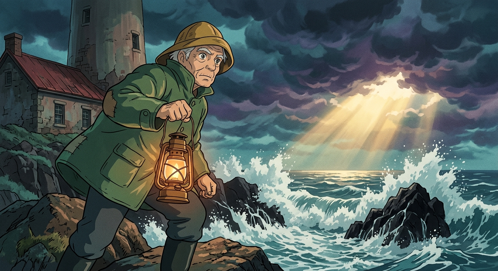
# When the Sun Went Down
The moment Ben Weatherstaff's head disappeared over the garden wall, Colin turned to Mary with a command that sent her flying across the grass to meet the old gardener at the ivy-covered door. What remained behind was nothing short of miraculous—a boy who had spent years believing himself an invalid now standing on his own two feet, scarlet spots blazing on his cheeks, his head held high with something that could only be called grandeur.
Dickon watched with those sharp, knowing eyes of his, seeing no signs of falling in the thin figure before him. When Colin declared he could stand, Dickon merely grinned his cheerful grin and reminded him this was exactly what he had predicted would happen once fear stopped ruling him. And fear had stopped—Colin admitted it himself, the words carrying a weight of revelation that seemed to change everything.
Then came the question about Magic, sharp and sudden, as Colin remembered Mary's mysterious mutterings. But Dickon only laughed and pointed to a clump of crocuses pushing through the earth, explaining that Colin was making his own Magic now—the same force that pulled green things up from the dark soil. Colin gazed at those humble flowers and understood something profound, drawing himself up straighter still and announcing his intention to walk to a nearby tree, to be standing when Ben Weatherstaff entered the garden. He would rest against the trunk if he chose, but not before.
And walk he did, wonderfully steady with Dickon's hand at his arm, positioning himself against the tree so that his need for support was barely visible. When Ben came through the door, Mary stood nearby muttering fierce encouragements under her breath—*You can do it! You can do it!*—weaving her own bit of Magic to keep Colin upright and proud before the old gardener's astonished gaze.
Colin's demand was imperious as ever: *Look at me! Am I a hunchback? Have I got crooked legs?* Ben, recovering from his shock, declared there was nothing of the sort—only a boy with pluck enough to live, not die. And so began a curious alliance, as Colin seated himself on a rug and learned that Ben had been climbing over the garden wall for years, pruning the roses in secret because Colin's mother had once asked him to care for them. Her orders had come first, Ben said with grumpy obstinacy, before the master's decree that no one should enter.
But the afternoon's greatest triumph was yet to come. Colin picked up Mary's dropped trowel and began scratching at the earth with his thin white hands, determined to prove Dickon's promises true—that he would walk and dig like other folk. Ben fetched a potted rose from the greenhouse, hobbling fast despite his rheumatics, and together they prepared a hole while Colin worked the soil with breathless excitement.
*I want to do it before the sun goes quite down*, Colin said, and perhaps the sun itself held back those final moments. The thin hands trembled as they set the rose into the earth, Ben firming the soil around it while Mary leaned forward on her hands and knees and even Soot the crow marched over to observe. When the plant stood steady at last, Colin asked Dickon to help him rise, declaring that standing when the sun slipped over the edge was part of the Magic.
And so it was that when the strange lovely afternoon ended, Colin stood laughing on his own two feet, the rose planted, the sun sliding away, and something unnameable stirring in the garden—something that whispered of even greater transformations yet to come.
# Chapter Summary: Magic
When Colin returned from his day in the secret garden, Dr. Craven was waiting with furrowed concern, having nearly sent a search party down the garden paths. The poor physician looked him over with the gravity of a man who had spent years expecting the worst, cautioning the boy against overexertion. But Colin, flush with triumph, declared himself not tired at all—quite the contrary. The garden had made him well, and he would go out again tomorrow, morning and afternoon both.
"I am not sure that I can allow it," Dr. Craven protested.
"It would not be wise to try to stop me," Colin answered with perfect seriousness. "I am going."
And here Mary observed something she had gradually come to understand about Colin—that he hadn't the faintest notion what a rude little brute he was. He had lived on a sort of desert island all his life, king of his own peculiar kingdom, with no one to compare himself against. Mary had been rather the same, she reflected, though Misselthwaite had begun teaching her otherwise. So she told him plainly: if Dr. Craven had been a slapping sort of man with a boy of his own, Colin would have been slapped long ago.
"But he daren't," said Colin.
"No, he daren't," Mary agreed without prejudice. "Because you were going to die and things like that. You were such a poor thing."
Colin's pride bristled at this. He was not going to be a poor thing—he had stood on his own two feet that very afternoon! Mary pressed on, explaining that always having his own way had made him queer. Colin demanded to know if he was queer, and Mary confirmed it cheerfully, adding that she was queer too, and so was Ben Weatherstaff—though she was less queer than before she found the garden and began to like people.
A beautiful smile slowly transformed Colin's face. He would stop being queer, he declared, if he went to the garden every day. There was Magic in that place—good Magic.
And so began the wonderful months, the radiant months, the amazing ones. Oh, the things which happened in that garden! Green things pushed through the earth in grass and beds and wall crevices, then showed buds that unfurled into every shade of blue and purple and crimson. Iris and white lilies rose in sheaves; delphiniums and columbines filled the alcoves like armies of flower lances. Ben Weatherstaff remembered how the garden's mistress had loved such things—flowers always pointing up at the joyful blue sky.
Colin watched each change unfold, spending every possible hour there. He observed buds unsheatheing, insects on their serious errands, a mole's elfish-looking paws breaking through earth. When Mary told him of the spell she had worked—repeating "You can do it!" while he first stood—Colin grew tremendously excited and announced he would conduct a scientific experiment. He gathered Ben, Dickon, and Mary before him and delivered a speech with all the conviction his strange eyes and ten-year-old authority could muster: Magic was in everything, pushing and drawing and making things out of nothing. He would call it into himself daily, chanting until it made him strong.
They sat cross-legged beneath the canopy tree like devotees in a temple, Dickon's creatures settling into the circle as though summoned by some charmer's signal. Colin chanted in his High Priest tone—"The sun is shining. The flowers are growing. The Magic is in me!"—until Ben Weatherstaff dozed and Mary felt entranced.
Then Colin walked round the entire garden, leaning on Dickon, resting on alcove seats, but never giving up. When he returned, flushed and triumphant, he declared his first scientific discovery complete. And no one—not Dr. Craven, not the household, not even his father—would know until the experiment had fully succeeded. One day Colin would simply walk into his father's study, straight and strong, and announce himself well.
He had made himself believe he would recover, which was more than half the battle—and the Magic, whatever its true name, had only just begun its work.
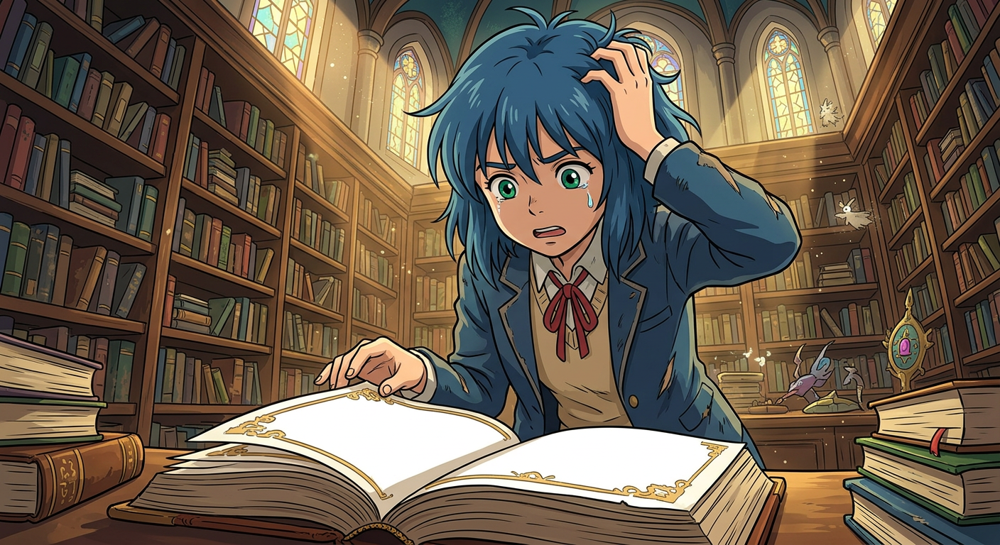
# Chapter Summary: "Let Them Laugh"
Beyond the hidden walls of the secret garden, Dickon tended another growing place—the humble plot beside his mother's cottage on the moor. There, in the early mist of morning and the long clear light of Yorkshire evenings, he worked among potatoes and cabbages, turnips and herbs, his creatures keeping him company while he whistled and sang. Mrs. Sowerby often said they'd never manage half so comfortably without Dickon's garden, for everything flourished under his care, growing twice the size of anyone else's vegetables and carrying a flavor no one could match. The low stone wall surrounding it had become one of the prettiest things in Yorkshire, tucked thick with foxglove and ferns and hedgerow flowers until scarcely a stone showed through.
It was during these twilight hours, sitting upon that flowering wall, that Mrs. Sowerby came to hear the whole remarkable tale of Misselthwaite Manor. Dickon told her everything—the buried key, the robin, the gray haze of deadness that had seemed so final, and the secret Miss Mary had sworn never to reveal. He spoke of Colin's doubt and his dramatic introduction to the hidden domain, of Ben Weatherstaff's angry face appearing over the wall, and of the young master's sudden indignant strength. Mrs. Sowerby's face changed color several times as she listened, and when she learned that Colin had stood upon his own feet, she declared it had been the making of the girl and the saving of the boy.
But Dickon had more to tell—of the delicious deception the children had devised. To keep the household from guessing Colin's miraculous improvement, they had taken to "play actin'," pretending he remained as helpless as ever. Colin would fly out at the footman for not carrying him carefully enough, groaning and fretting while being settled into his chair, with Mary asking sympathetically if poor Colin was truly so weak. Yet the moment they reached the safety of the garden, they dissolved into laughter, stuffing their faces into cushions to muffle the sound.
The difficulty was their appetites. Growing stronger by the day, they found themselves ravenous—yet eating too heartily would betray them. Mrs. Sowerby laughed until she rocked in her blue cloak, then offered her solution: each morning Dickon would bring fresh milk and hot cottage loaves or currant buns, enough to take the edge off their hunger while the fine food indoors "polished off the corners."
And so began many agreeable incidents. The children discovered a hollow in the wood where Dickon showed them how to build a tiny oven of stones for roasting potatoes and eggs—luxuries fit for woodland royalty. Meanwhile, the Magic continued daily beneath the plum-tree's thickening canopy, and Colin practiced exercises Dickon had learned from Bob Haworth, the strongest man on the moor. Each day brought greater strength, steadier walking, and deeper belief in the Magic itself.
At the Manor, bewilderment grew. The nurse reported they ate almost nothing; Mrs. Medlock declared herself "moithered to death" watching them burst their jackets one day and refuse the cook's finest inventions the next. When Dr. Craven examined Colin after a fortnight's absence, he found the boy transformed—roses in his cheeks, clear eyes, healthy lips, and hair springing soft and warm from his forehead. As for their mysterious fasting, the doctor could only conclude that so long as going without food agreed with them, there was no cause for alarm. Mrs. Medlock noted that even Mary had grown downright pretty, her sour look vanished, her hair thick and shining, and the two of them laughing together like a pair of young lunatics.
"Perhaps they're growing fat on that," Mrs. Medlock observed.
"Perhaps they are," Dr. Craven agreed. "Let them laugh."
And as spring ripened toward summer in the secret garden, the children held fast to their joyful conspiracy, waiting for the day when Colin might at last reveal the truth to his father.
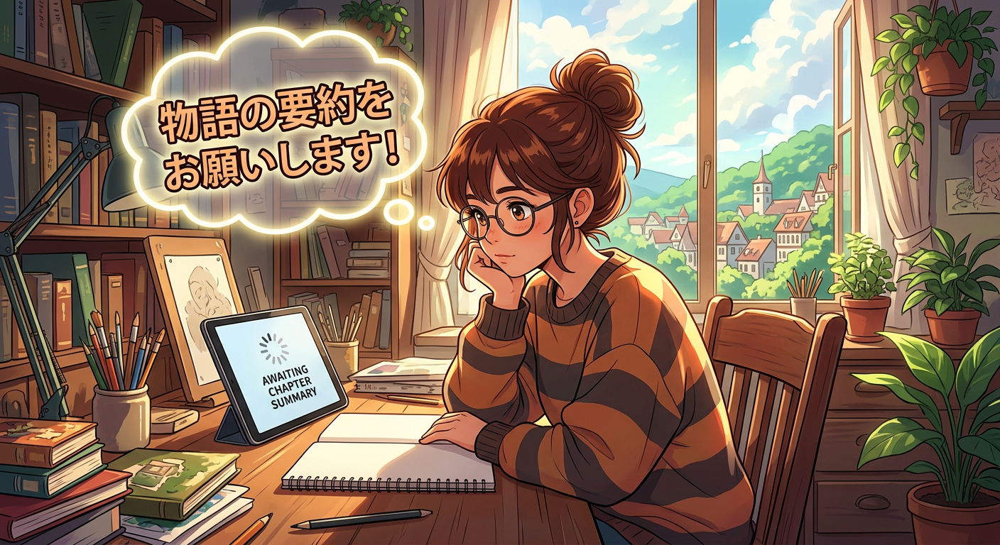
# The Curtain
The secret garden continued its transformation, each morning unfurling new miracles like whispered promises, and in the robin's nest there appeared the most sacred of treasures—Eggs. The robin's mate sat upon them with such tender vigilance, keeping them warm beneath her feathery breast, while the robin himself maintained his watch with indignant devotion. Even Dickon, who understood the language of all wild things, kept his distance from that close-grown corner, for he knew what the others knew—what every living soul in that garden understood through their innermost being—that the Eggs represented something of immense, terrible, heart-breaking beauty. Had there been even one creature present who did not comprehend this solemnity, who might have disturbed that sacred brooding, there could have been no happiness in all that golden springtime air.
The robin observed the children with sharp anxiety at first, though he never worried about Dickon. From the moment he set his dew-bright black eye upon the boy, he recognized him as a sort of robin without beak or feathers—one who could speak robin as naturally as a Frenchman speaks French. But the other two required watching. The boy creature especially troubled him, arriving not on legs but pushed upon a wheeled contraption, wild animal skins thrown over him. When Colin began standing and moving in his queer, unaccustomed way, the robin secreted himself in a bush, tilting his head this way and that, fearing these slow movements might mean the boy was preparing to pounce like a cat.
Yet as the weeks passed, understanding came to the robin in a flash of memory. He recalled his own fledgling days, learning to fly in short bursts before resting, and realized this boy was doing precisely the same—learning to walk, to fly in his own human fashion. He shared this revelation with his mate, who found great comfort in it and began watching Colin's progress with eager interest from the edge of her nest. Though she remained confident the Eggs would prove far cleverer and quicker than any human child, she conceded indulgently that humans were always clumsy creatures who never truly learned to fly at all.
The children's exercises continued to puzzle the robin pair. They would stand beneath the trees, moving their arms and legs and heads in ways that seemed neither walking nor running nor sitting. The robin could only assure his mate that since Dickon participated, the strange flapping posed no danger. Neither bird had heard of Bob Haworth, the champion wrestler whose exercises made muscles stand out like lumps—robins, after all, develop their muscles naturally through the constant work of flight.
When Colin could walk and run and dig like the others, peace settled over the nest completely. The Eggs' mother found her occupation most entertaining, watching the curious human doings, though she grew rather dull on wet days when the children stayed away.
On one such rainy morning, with Colin restive on his sofa, Mary conceived a brilliant inspiration. Together they ventured into the hundred unused rooms of Misselthwaite Manor, discovering galleries where Colin could run, the Indian room with its ivory elephants, the rose-colored boudoir with the mouse-empty cushion. They found new corridors and weird old things, returning with appetites so fierce that not a morsel of luncheon remained—a mystery that set the household staff buzzing.
But the truest change revealed itself quietly. The curtain before Colin's mother's portrait now hung drawn aside. Moonlight had called him from his bed, and when he'd pulled the cord, she had seemed to laugh down at him with such gladness that his old anger melted away entirely. Now he wanted to see her always, this woman who must have been a sort of Magic person herself.
"You are so like her," Mary observed, "that sometimes I think perhaps you are her ghost made into a boy."
Colin considered this carefully. "If I were her ghost," he said slowly, "my father would be fond of me." And in that admission lay the stirring of a deeper longing—a hope that his transformation might yet draw his absent father home and make him cheerful once more.
# Chapter XXVI: "It's Mother!"
The Magic had become a living thing to them now, as real as the roses climbing the garden walls or the Yorkshire soil beneath their fingernails. Colin had taken to delivering lectures on the subject—practice, he explained, for the great scientific discoveries he would one day share with the world. Ben Weatherstaff sat through these addresses with eyes fixed not upon the words but upon the boy himself, watching those once-stick-thin legs growing straighter and stronger by the day, that sharp chin filling out, those hollow cheeks rounding into something that reminded him powerfully of another face he had known and loved long ago. When Colin caught him staring, Ben reckoned the lad had gained three or four pounds that week alone, eyeing his calves and shoulders with the satisfaction of a farmer appraising fine livestock.
That morning, Colin made a discovery that struck him with the force of revelation. He had been weeding alongside Mary and Dickon, trowel in hand, when something rushed through him—a rapturous certainty that could not be contained. He stood suddenly, stretching to his full height, arms flung wide, face flushed with joy. "Just look at me!" he cried. He remembered that first morning in the garden, when he had been wheeled in like an invalid prince, and now here he stood on his own two feet, digging in the earth. "I'm *well*—I'm *well!*"
The realization demanded expression, something thankful and joyful to shout to anything that would listen. Ben Weatherstaff, dry as ever, suggested the Doxology. Colin had never heard it, having been too ill for church, but when Dickon explained that his mother believed the skylarks sang it each morning, Colin knew it must be worth learning. They removed their caps—even Ben, with puzzled reluctance—and Dickon's strong boy-voice lifted the old hymn among the trees and roses. They all joined in, Mary and Colin lifting their voices as best they could, and by the third line Ben sang with such savage vigor that when they reached "Amen," tears streaked his leathery cheeks.
It was then the garden door opened, and a woman stepped through with the last notes of their song still hanging in the air. She stood framed by ivy and dappled sunlight, her long blue cloak settling around her, her wonderful eyes taking in everything—the children, Ben, the creatures, every bloom. Dickon's face lit like a lamp. "It's mother—that's who it is!"
Susan Sowerby moved among them as naturally as the morning light. When Colin held out his hand with flushed, royal shyness, her face trembled at the sight of him. "Eh! dear lad!" she said, seeing in his features the ghost of his own mother. She examined his strong new legs, pronounced them soon to be the finest in Yorkshire, and turned to Mary with equal warmth, promising the once-sallow child she would bloom like a blush rose. They showed her everything—every bush and tree come back to life—and she understood them as Dickon understood his creatures, stooping to speak of flowers as though they were children.
When Colin asked if she believed in Magic, Susan Sowerby's answer held the wisdom of the moors: the same good thing that swelled seeds and warmed the sun had made him well. Names mattered nothing to it. The Big Good Thing went on making worlds by the million. "Never thee stop believin'," she told him, "an' call it what tha' likes."
As she prepared to leave, Colin caught hold of her blue cloak and confessed what had grown in his heart. "You are just what I wanted. I wish you were my mother—as well as Dickon's." Susan Sowerby drew him close against her warm bosom, and through the quick mist in her eyes, she whispered that his own mother could never stay away from this garden—and that his father must come back to him at last.
And far across the world, in foreign lands where he had wandered to escape his grief, Archibald Craven was about to discover that something was calling him home.
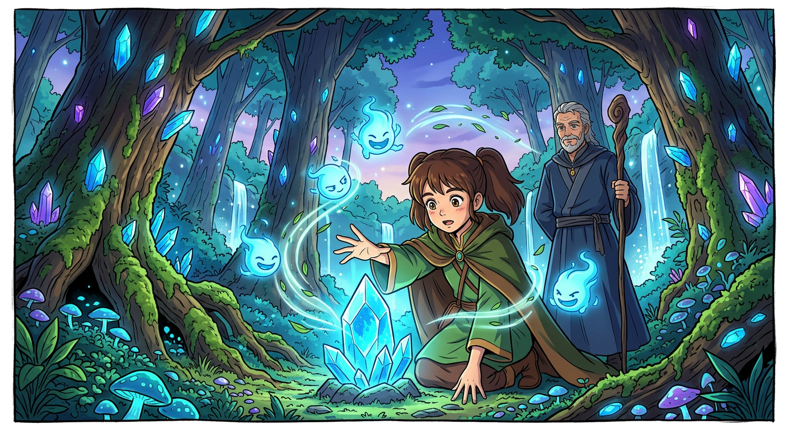
# In the Garden
The chapter opens with a meditation on the extraordinary power of discovery—how each passing century unveils wonders previously thought impossible, and how the human mind itself has emerged as one of the most remarkable forces yet understood. Thoughts, the narrator explains, possess the potency of electric batteries, capable of nourishing like sunlight or poisoning like fever. This philosophy threads through all that follows, binding the transformations of body and spirit that have quietly unfolded throughout the story.
Mary Lennox, once that yellow-faced, sour-opinioned creature who found nothing worthy of her interest, had been pushed by circumstances toward her own good. Her mind, gradually filled with robins and moorland cottages, with the crabbed affection of old Ben Weatherstaff and the earthy wisdom of Yorkshire housemaids, with the secret garden awakening day by day and Dickon's gentle creatures, left no room for the disagreeable thoughts that had once made her liver sluggish and her countenance jaundiced. Colin, too, had shed his hysterical fears and morbid obsessions with humps and early death. When beautiful thoughts pushed out the hideous ones, life flooded back into him like spring water clearing a stagnant pool. The scientific experiment, as he had called it, proved neither weird nor complicated—simply the determined replacement of dark thoughts with courageous ones, for two things cannot occupy the same space.
Meanwhile, far across the continent, Archibald Craven wandered through Norwegian fjords and Swiss valleys, his mind still clouded with ten years of grief. He had let blackness fill his soul after his wife Lilias died, refusing any rift of light. Yet slowly, inexplicably, something began to shift. By a clear Austrian stream, gazing at forget-me-nots, he felt old thoughts gently pushed aside. At Lake Como, a dream came—Lilias's voice calling him to the garden. When Susan Sowerby's letter arrived, urging him home, he obeyed without hesitation.
Returning to Misselthwaite, Mr. Craven found the servants bewildered by Colin's mysterious changes. Following the path through the shrubbery toward the hidden garden, he heard impossible sounds—children's laughter behind the ivy-covered door. Then it burst open, and a tall, glowing boy dashed into his arms. It was Colin, transformed, announcing his resurrection with breathless joy.
Father and son entered the garden together, now a wilderness of autumn gold and flaming scarlet, and there Colin told the whole miraculous tale. When they emerged, walking side by side across the lawn, the servants of Misselthwaite witnessed what none had dared imagine: Master Colin, strong and steady, striding home at last—and the story that had begun in loneliness and shadow found its completion in light.
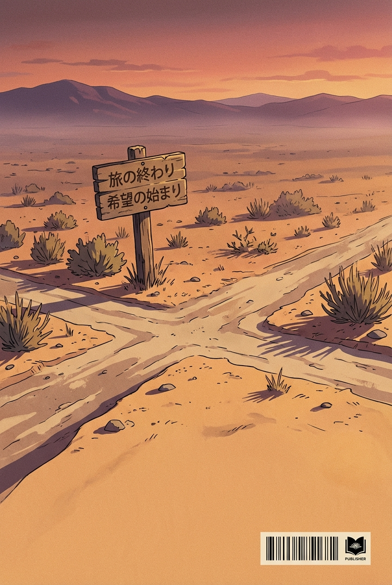